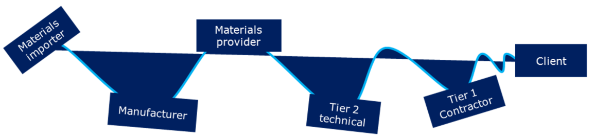

Supply chain strategy – what do construction and infrastructure have in common with retail?

Liam Bray
Director, Portfolio Management
Getting your supply chain strategy right is key to achieving outcomes and ensuring projects and programmes are delivered on time and to budget.
What is supply chain management in construction?
Supply chain management in the construction industry is the relationship between the suppliers and the contractors involved in the overall project. This integrated approach is the foundation of success whereby all the stakeholders have a full understanding of the resources, logistics and the people involved to ensure the project and programme are delivered on time and budget.
While the construction industry will never die, as suggested in the Farmer Review (2016), there is always a looming risk of costs spinning out of control on complex projects or due to unpredictable events such as funding or political change.
Fortunately, there are many opportunities to ensure that costs do not spiral. One solution is intelligent and informed commercial management processes, experience and governance. Sound commercial management is a foundation to project and programme success and worth its weight in gold as not only does it keep programmes on track but it ensures the proactive identification of delays or risks.
Closely linked to this is having a successful construction supply chain strategy, which will start well before construction commences and have cooperation and competition at its heart. It engages stakeholders, and ultimately, it is predictable and forward-looking.
In recent years, we have seen a growing trend for the infrastructure sector to turn to other industries such as high tech, manufacturing and retail to look at what informs successful supply chain management in construction. Despite the differences between these sectors, there are many tools and techniques that infrastructure can adopt or are surprisingly already similar.
What’s driving your client - predictability or flexibility?
Construction supply chains have two options: be lean, or be agile. There are trade-offs with each option, but it’st is essential that programme leads be realistic about the needs of customers when building a supply chain (Slack, 2015). Lean supply chains are most appropriate when demand is steady, consistent and predictable. In retail, lean supply chains form when price, quality, reliability (in the form of consistency) are a crucial determinant.
Conversely, speed and flexibility are less of an issue. The snag with a lean supply chain is that without clear and consistent communications of demand changes upstream, stocks can quickly build up in the wrong places creating extreme peaks and troughs in supply, throwing the whole chain into disarray. This ‘bullwhip effect’ (Forrester, 1958) is a well-documented phenomenon in many supply chains.

Bullwhip effect on a lean supply chain following customers changes in demand and inconsistent information sharing
Agile supply chains may be more suited for repeat clients who need greater flexibility. However, they depend heavily on building long-term trust and being heavily invested in the success of each other’s business. In infrastructure, lean supply chains are most appropriate when cost and quality are the priority, with time and flexibility being less urgent, aligning very well with traditional procurement.
Traditional procurement requires a comprehensive brief of customer demands, enabling the supply chain to organise and match the client’s specific volume requirements. The sequential nature of a traditional chain may take longer to form, but it can aid delivering cost certainty.
The downside with this approach is that should change occur, it will incur enormous costs through re-sequencing, and unknown knock-on effects for upstream suppliers. Furthermore, how do you factor this into a price?
It may be easy for a quantity surveyor to measure the change they see with pre-agreed rates, but does this adequately compensate suppliers for the time and effort that goes into suddenly adapting to fluctuating customer demand and lost business opportunities.
Moreover, if resources are scarce and in high demand, the price on the day may not be the price in the final bill. Lean chains driven by least cost can lead to highly transactional supplier relationships, which may be beneficial for one-time buyers, but can erode trust with repeat clients.
Putting collaboration at the heart of agile construction supply chains
More commonly, speed is the ultimate driver of procurement. Reduced tender periods, concurrent design processes, and faster operations are examples of enabling more immediate returns on investment, especially when the cost of borrowing is so low, and capital expenditure can be depreciated over long periods. With this comes the need for many decisions to be made in real-time. Overlaid by an economy with rapidly changing customer demands, there is a significant need for flexibility and adaptability in processes.
With a greater emphasis on speed and flexibility, suppliers must be well informed, well stocked, and close to site and ready to respond. Naturally, there are trade-offs to this approach, holding too much stock sucks up working capital for suppliers, therefore to secure such materials, long-term trust-based relationships must be formed that are facilitated by clear lines of communications. This is where collaboration is fundamental to a successful supply chain management strategy in construction.
Through planning in real time, supermarkets are well prepared to manage peaks and troughs in demand: this is how they ensure that come to the Wimbledon tennis championship, shelves are well stocked with strawberries and cream. It is because they have:
- Nurtured strategic partnerships
- Built joint business plans, buying minimum volumes and agreeing on preferential rates
- Shared data to predict the perfect balance between supply and demand
- Enable each other to focus on adding value in their segment of the chain to deliver maximum value
- Provided buying power for smaller enterprises
- A dedicated distribution team programme networks and delivery schedules to get the precise number of strawberries to each store that will maximise sales.
Now let’s think about construction. Following Latham and Egan, much has been done to encourage strategic partnerships, and we are seeing real evidence that this collaborative approach works. Now consider Heathrow who are working with the supply chain well before the construction of a possible third runway begins.
Heathrow is directly engaging with supply chains and SMEs nationally through its ‘Business Summit’ programme which is specifically focused on providing opportunities to connect and trade with Heathrow’s supply chain and generate opportunities. Also, we are seeing an increase in the leveraging of data to inform decision making. Sharing programme data enables suppliers to reconfigure their chains, providing greater security regarding volume.
Using technology to predict
Another area that retail is active is in collaborative forecasting. Retailers leverage extensive amounts of historical in-house and supplier data for millions of customers. By combining this with real-time changes in local demographics, weather, community events, and seasonality, retailers can predict demand profiles for every product on every shelf for every hour of the day in every store in the UK.
For the infrastructure sector, the UK Government through the Infrastructure and Projects Authority are leading this agenda through the National Infrastructure Pipeline, which is a first step in building a picture of total demand in the market.
The great thing about collaborative forecasting is it enables suppliers to reduce stockholding through the adoption of processes and systems such as MRP (material resource planning). By enabling the construction supply chain to secure a lean inventory of steel, bricks, cladding panels and widgets, clients can avoid incurring on-costs of storage, distribution and ultimately wasted and unwanted products.
As a result, suppliers can buy in greater bulk at the right time, freeing up cash flows. By sharing your pipeline, your suppliers can share their inventories, and together you can plan how much or how little to buy and when to buy it.
Reducing variety to drive huge efficiencies in construction supply chains
In retail, variety is the enemy. For high volume retailers, variety builds significant cost into the chain. Let’s look at some examples; Aldi and Lidl have been incredibly successful in their low-cost strategy compared to UK retailers, this is because they sell the equivalent of 3 percent of the total number of products you find in your typical Sainsbury or Tesco stores. Assuming customers want better prices, something has to give, and that is often variety of choice.
Conversely, due to the complexity and variety in the production process no construction project is ever the same. Land conditions, availability of materials, weather events and the skills and capabilities of the team are examples of variables that will never be the same on any one day.
The construction industry is evolving to find the balance between efficiency and elements or decisions which can be standardised or automated. This is seen through the increase in offsite manufacturing processes and investment and the use of technology and digital intelligence which can automate decision making or reveal where efficiencies can be achieved.
These changes are being realised on a project and industry level and there will continue to be significant innovation and changes in how programmes are delivered as a result of the drive towards efficiency, technology and off-site manufacturing. This evolution is actively being supported by the government, as demonstrated by the construction sector deal and infrastructure being identified as a foundation of the Industrial Strategy White Paper in November 2017.
Facing into the trade-offs
Good strategy is as much about being clear of what is in and out of scope. Off-Site Manufacturing (OSM) is a much-cited solution, but if we want to think seriously about OSM in the infrastructure sector, we need to think about the things clients and their designers will be willing to give up. Are we, clients, consultants, designers and contractors ready to use “off the shelf” products?
We need to continue to standardise our approaches and create sufficient demand to make the economics work. However, the market will not decide on its own, and it may require significant Government intervention. This will be a big task because it requires buy-in and collaboration from members across the value chain.
Changes in the 2017 UK Budget will help to guarantee a steady supply of land to build, which could enable a steady demand for flat pack houses. But even if there is sufficient demand, we need to make it cost effective to create infrastructure. It is only by facing these macro-level challenges that we will genuinely drive productivity and eradicate inefficiency in our construction supply chain.
Conclusion
The future looks bright for the infrastructure sector and we have made incredibly positive steps towards evolving our practices to collaborate with supply chain partners. Many would not realise that there is already close alignment in the thinking and methods between retail and construction, nor that there is more we could explore and learn from retail.
But what else could infrastructure learn from other sectors such as retail?
- Embrace collaborative forecasting: retail achieves greater efficiencies and manages costs through working together and collaboratively forecasting peak demand periods. Imagine if the infrastructure and construction sector collaborated more actively with government and investors on the National Infrastructure Pipeline. Subsequently, this would also facilitate investment in skills, processes or resources which would ultimately enable collaborative forecasting years in advance of major programmes.
- Put collaboration at the heart of construction supply chains as default: as an industry, construction must follow the lead of retail and clients such as Heathrow. Collaborative behaviours and intentions are only half of the battle; we must genuinely embed collaborating with supply chains well before programmes begin and create mutual reliance and plans for the benefit of all. This extends beyond just the delivery of goods or services but must support the development of skills and practices.
References
Forrester, J. (1958) Industrial Dynamics - A Major Breakthrough for Decision Makers. Harvard Business Review, July-August pp. 67-96
Slack, N, Brandon-Jones, A, Johnston, R & Betts, A (2015) Operations and Process Management, 4th ed. Harlow: Pearson Education